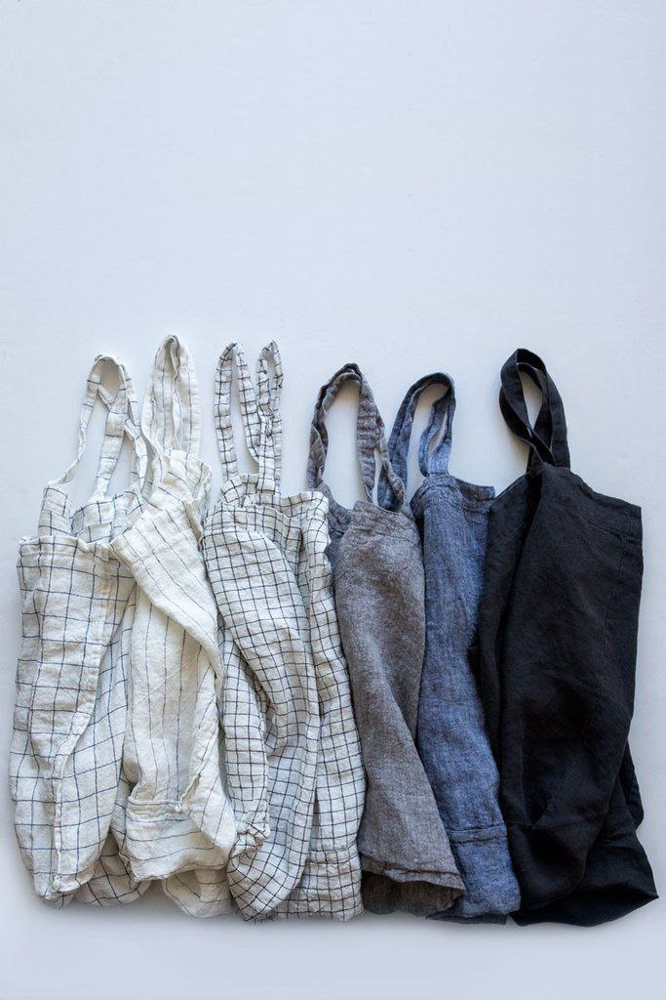
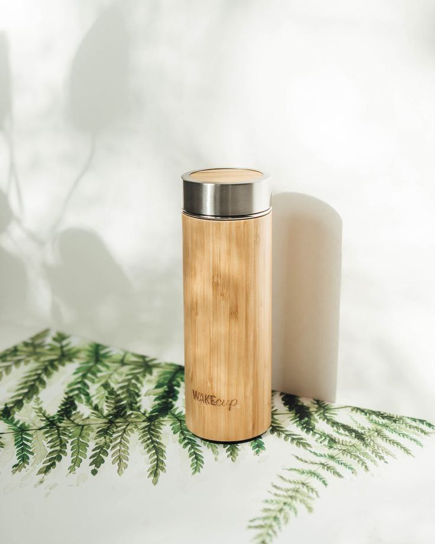
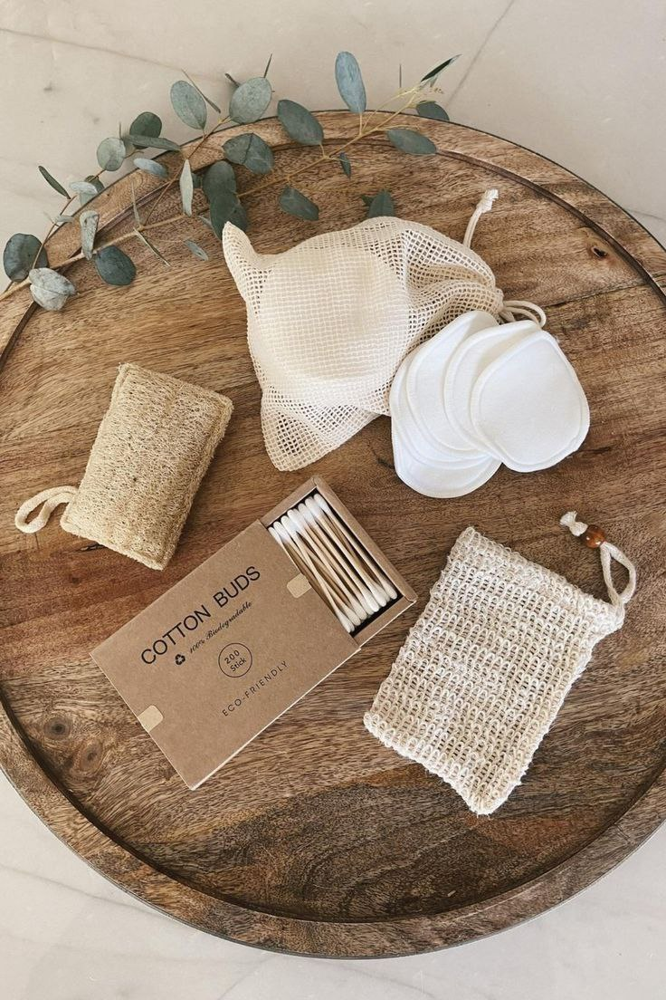
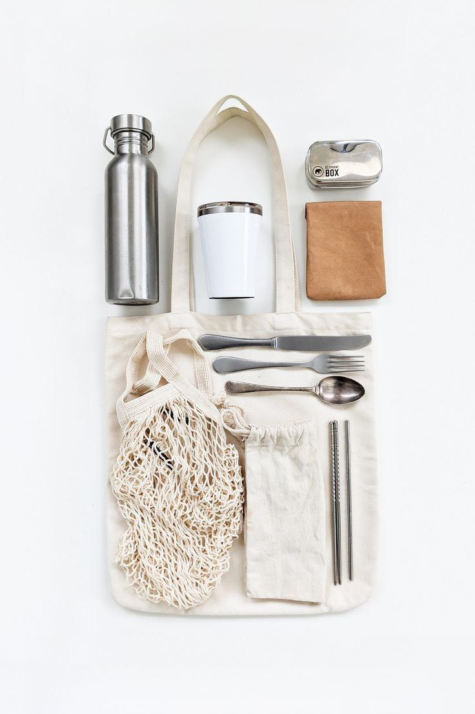

- Большие пакеты мы заменяем тканевыми сумками или ходим в магазин с рюкзаком, а маленькие — многоразовыми пакетами-зиплоками или тканевыми мешочками или мешками для стирки.
- Долой! Приобретите симпатичную многоразовую бутылку или маленький термос и берите воду с собой из дома. А домой можно заказывать чистую воду в больших емкостях, которые привозят специальные службы. Эти емкости они потом используют несколько раз — и вам нет необходимости утилизировать пластиковые бутылки, и не нужно постоянно таскать воду из магазинов.
- Лор‑врачи считают, что чистить уши ватными палочками опасно: извлечь серу до конца всё равно не получится, а её остатки могут слипаться и образовывать пробки. Если палочки нужны вам для других целей (например, чтобы поправить макияж или обработать царапину), используйте многоразовые. Просто оберните оба конца зубочистки небольшими кусочками ваты, а потом выбросите испачканные «наконечники». Если заморачиваться не хочется, купите палочки из биоразлагаемых материалов.
- Обычные губки для мытья посуды не разлагаются естественным путём и не подходят для переработки. При этом срок их службы чаще всего составляет всего пару недель. Если вы любите радикально решать проблемы, можно купить посудомоечную машину — обычную или настольную, которая не требует подключения к водопроводу. Ещё один рабочий вариант — деревянная щётка с натуральным ворсом. В отличие от губки, она не впитывает запахи и прослужит не один год.
- Если вы думаете, что бумажные стаканчики безвредны для планеты, то заблуждаетесь. Их действительно делают из разлагаемой целлюлозы, но изнутри её покрывают полипропиленом, чтобы стенки не размокали. Такой «слоёный пирог» из бумаги и пластика не подлежит переработке. А ещё при производстве бумажных стаканчиков используют бисфенол‑А, который опасен для большинства морских обитателей. Отказываться от напитков навынос вовсе не обязательно. Можно просто брать с собой термокружку и просить бариста налить кофе в неё. Кстати, в некоторых кофейнях на напитки, которые наливают в вашу посуду, действуют скидки. Так что не только планете поможете, но и сэкономите.



